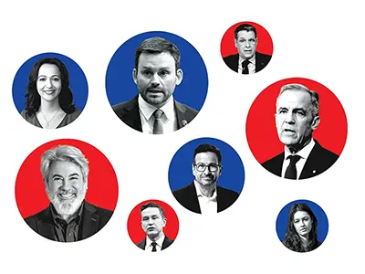
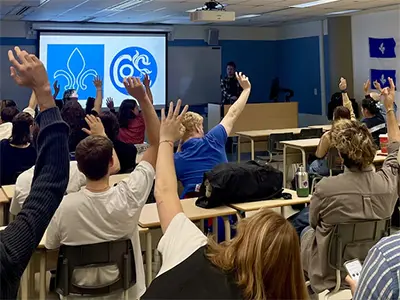
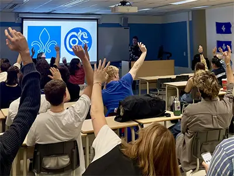

Médias


 

Petite cartographie contemporaine du Oui et du Non
Le Devoir
1er nov. 2025
Souveraineté du Québec : pourquoi les jeunes retournent vers le « oui »?
Radio-Canada
31 oct. 2025
Young Montreal sovereigntists long for Quebec independence, 30 years after referendum
CBC
26 oct. 2025
Les comités étudiants indépendantistes se multiplient au Québec
Radio-Canada
30 sept. 2025
Des comités pour un Québec libre dans tous les CÉGEPS?
Generation OUI
29 sept. 2025